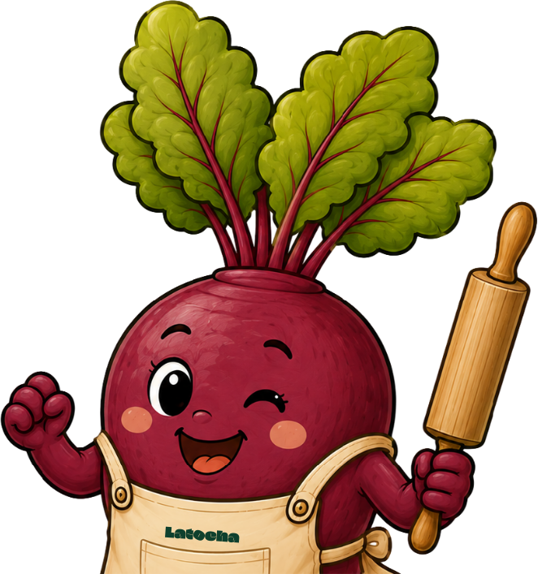

Un restaurante donde la cocina murciana se expresa con raíz, sensibilidad y alma.
Un lugar para dejarse cuidar, disfrutar sin prisa y sentirse parte de una historia hecha de tierra, producto y oficio.
¡Reserva!Tomás y Laura somos el alma y las 4 manos de Latocha. Ambos murcianos de nacimiento, nos conocimos hace cinco años en la cocina de Local de Ensayo, desde entonces no nos hemos separado: hemos crecido juntos, compartido cocinas, proyectos y aprendizajes, hasta llegar al momento de cumplir el sueño de levantar nuestro propio restaurante.
Laura aporta sensibilidad, entrega y una mirada limpia hacia la cocina. Tomás suma casi trece años de oficio, formados en casas como Martín Berasategui, DSTAgE y El Celler de Can Roca, donde trabajó durante cuatro años y tuvo la oportunidad de viajar por el mundo llevando la cocina del Celler a distintos continentes.
Hoy cocinamos desde un mismo lugar: el amor por el oficio, el respeto por el producto y la ilusión de contar nuestra propia historia plato a plato.